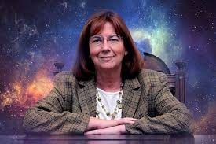
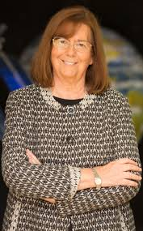
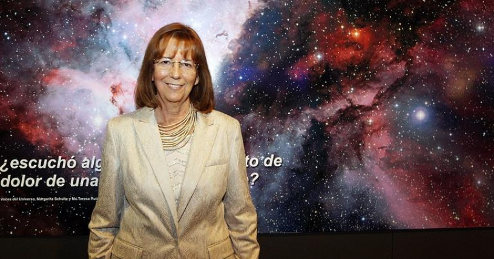

Nació el 24 de septiembre de 1946 en Santiago de Chile. Fue la primera mujer en estudiar astronomía en su país.
Se convirtió en la primera chilena en obtener un doctorado en astrofísica en Princeton.
Se especializó en estrellas frías y objetos subestelares.
En 1997 realizó un descubrimiento extraordinario: una enana café llamada Kelu-1, uno de los primeros objetos
de este tipo observados desde la Tierra.
Este hallazgo abrió una nueva ventana de estudio sobre la formación estelar.
Ha recibido premios como el Nacional de Ciencias Exactas en Chile, siendo la primera mujer en ganar este reconocimiento.
Su trabajo la posicionó como una de las astrónomas más influyentes de Latinoamérica.
Fue directora del Departamento de Astronomía de la Universidad de Chile.
Su carrera representa liderazgo, excelencia y avances científicos relevantes. Es autora de libros que acercan la astronomía al público general.
Su impacto continúa inspirando a mujeres en ciencias.
Mantiene una fuerte labor educativa y científica.